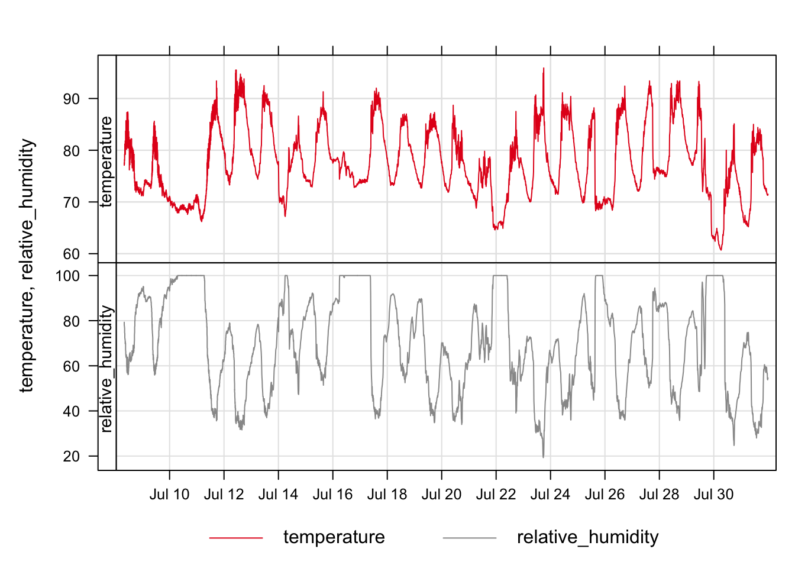
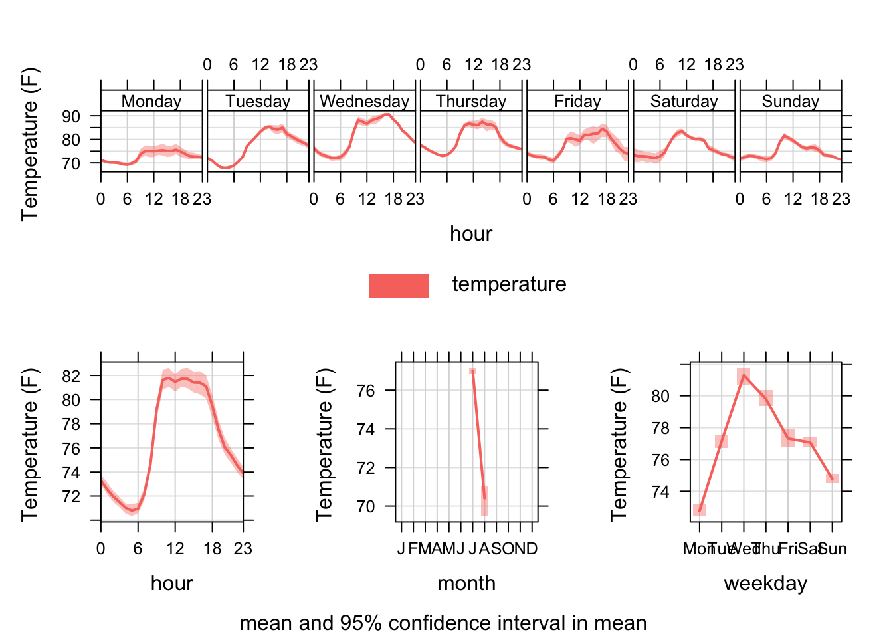
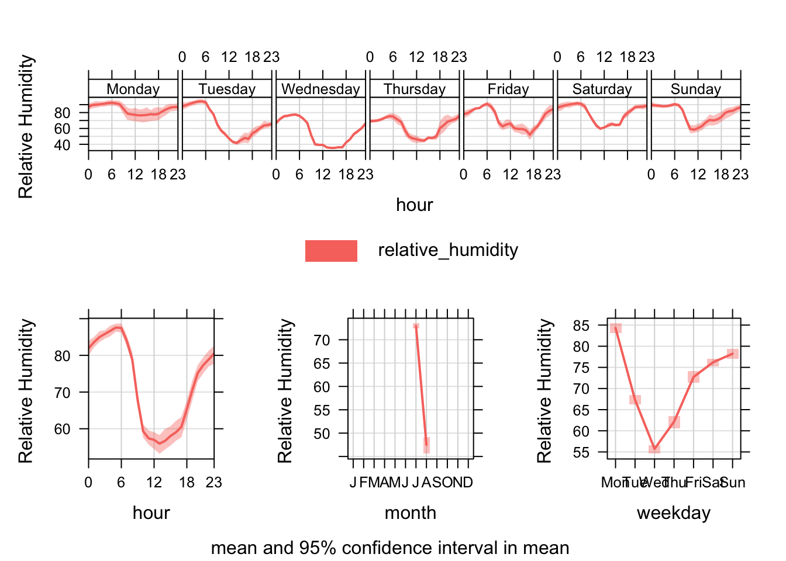
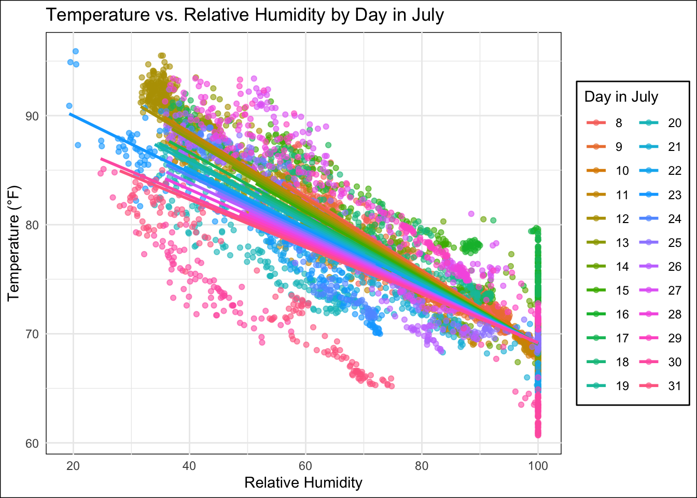
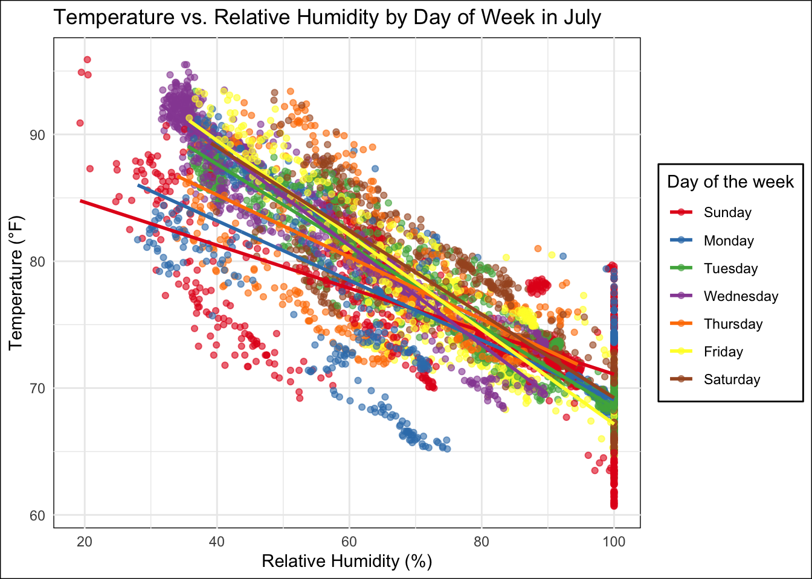

“Boston’s 2023 summer saw record heat waves 🌡️, pushing the city to declare heat emergencies. Understanding where and how heat can occur has become increasingly important for shaping policy, strengthening community resilience, and ensuring climate preparedness across cities like Boston. While agencies like MassDEP already collect extensive environmental monitoring data, the next step is to understand what it means—analyzing heat trends to help identify health risks ⚠️, guide targeted interventions, and inform city planning.”
This project explores environmental data collected from Reggie Wong Park in Boston during July and August 2023. The goal is to uncover patterns and relationships between:
Weather data was collected every 10 minutes using a Kestrel sensor. I built an end-to-end data pipeline in R for data cleaning (QC) and applied time series analysis to examine how features like temperature and humidity influence local environmental conditions.
This method is widely applicable across industries:
Data were collected using Kestrel Sensors at Reggie Wong Park on August 2, 2023. Please email me for more information about this dataset.
tidyverse, dplyr,
ggplot2, plotly, lubridate,
openair## # A tibble: 6 × 7
## date temperature wet_bulb_temp relative_humidity station_pressure heat_index
## <chr> <dbl> <dbl> <dbl> <dbl> <dbl>
## 1 2023-… 72.3 70.2 90 29.8 74.5
## 2 2023-… 72.6 70.5 90.2 29.8 74.8
## 3 2023-… 72.4 70.3 90.2 29.8 74.7
## 4 2023-… 72.6 70.5 90.3 29.8 74.8
## 5 2023-… 72.4 70.3 90.3 29.8 74.7
## 6 2023-… 72.4 70.3 90.5 29.8 74.7
## # ℹ 1 more variable: dew_point <dbl>The dataframe kestrel_df contains 7 variables and 6222
observations 📁🔢.
This dataset captures a range of environmental metrics 🌡️💧🌬️ collected by the Kestrel sensor between July 8, 2023, at 8:02 PM and August 2, 2023, at 3:30 PM 📆🕒.
📌 Initially, measurements were recorded at 2-minute intervals ⏱️ until July 12, 2023, at 7:30 PM, after which the recording frequency changed to 10-minute intervals ⏲️ for the remainder of the monitoring period.
In this section, I apply time series analysis to examine trends and patterns in environmental variables over time 🕒🌡️💧. By analyzing changes in outdoor temperature, relative humidity, and other weather metrics, we can better understand how these factors interact and evolve throughout the monitoring period 🔍📊.
Techniques include: - 📅 Temporal trend visualization
- 🔁 Lag analysis
- 📉 Smoothing and decomposition
- 📐 Correlation between variables over time
This analysis helps reveal underlying patterns and supports further modeling or prediction efforts 🔮.
## # A tibble: 6,222 × 11
## date year month day hour temperature wet_bulb_temp
## <dttm> <dbl> <dbl> <int> <int> <dbl> <dbl>
## 1 2023-07-08 20:12:00 2023 7 8 20 72.3 70.2
## 2 2023-07-08 20:14:00 2023 7 8 20 72.6 70.5
## 3 2023-07-08 20:16:00 2023 7 8 20 72.4 70.3
## 4 2023-07-08 20:18:00 2023 7 8 20 72.6 70.5
## 5 2023-07-08 20:20:00 2023 7 8 20 72.4 70.3
## 6 2023-07-08 20:22:00 2023 7 8 20 72.4 70.3
## 7 2023-07-08 20:24:00 2023 7 8 20 72.3 70.3
## 8 2023-07-08 20:26:00 2023 7 8 20 72 70
## 9 2023-07-08 20:28:00 2023 7 8 20 72.2 70.3
## 10 2023-07-08 20:30:00 2023 7 8 20 72 70
## # ℹ 6,212 more rows
## # ℹ 4 more variables: relative_humidity <dbl>, station_pressure <dbl>,
## # heat_index <dbl>, dew_point <dbl>📉 I separated the date column into year, month, day and hour.
## # A tibble: 6 × 11
## date temperature wet_bulb_temp relative_humidity
## <dttm> <dbl> <dbl> <dbl>
## 1 2023-07-08 20:10:00 72.3 70.2 90
## 2 2023-07-08 20:10:00 72.6 70.5 90.2
## 3 2023-07-08 20:10:00 72.4 70.3 90.2
## 4 2023-07-08 20:10:00 72.6 70.5 90.3
## 5 2023-07-08 20:20:00 72.4 70.3 90.3
## 6 2023-07-08 20:20:00 72.4 70.3 90.5
## # ℹ 7 more variables: station_pressure <dbl>, heat_index <dbl>,
## # dew_point <dbl>, year <dbl>, month <dbl>, day <int>, hour <int>📉 I found the average 10-min values for temperature, humidity…
## # A tibble: 6 × 11
## date temperature wet_bulb_temp relative_humidity
## <dttm> <dbl> <dbl> <dbl>
## 1 2023-07-08 00:00:00 77.2 70.9 75.1
## 2 2023-07-09 00:00:00 74.5 70.3 82.5
## 3 2023-07-10 00:00:00 69.1 69.0 99.3
## 4 2023-07-11 00:00:00 78.3 69.1 67.5
## 5 2023-07-12 00:00:00 84.1 70.3 53.9
## 6 2023-07-13 00:00:00 82.2 70.8 58.9
## # ℹ 7 more variables: station_pressure <dbl>, heat_index <dbl>,
## # dew_point <dbl>, year <dbl>, month <dbl>, day <dbl>, hour <dbl>📉 I found the average daily values for temperature, humidity…
## # A tibble: 2 × 11
## date temperature wet_bulb_temp relative_humidity
## <dttm> <dbl> <dbl> <dbl>
## 1 2023-07-01 00:00:00 77.0 69.6 72.9
## 2 2023-08-01 00:00:00 70.4 57.6 47.5
## # ℹ 7 more variables: station_pressure <dbl>, heat_index <dbl>,
## # dew_point <dbl>, year <dbl>, month <dbl>, day <dbl>, hour <dbl>📉 I found the average monthly values for temperature, humidity…
date column into
year, month, day, and
hour components for easier time-based grouping.📌 Note: Only two days of data were recorded in August—08/01/2023 and 08/02/2023.
This section showcases key visual insights from the dataset using plots to highlight temporal patterns and changes in environmental conditions over time 🕒🌡️💧.
Here, we compare average temperatures recorded in July and the first two days of August 2023 🔥🧊. This helps identify short-term seasonal shifts and examine how extreme heat events varied between the two months.
This section explores how key environmental metrics—such as temperature, humidity, and other weather conditions—varied throughout July 2023 📅📈. By visualizing these changes over time, we can better understand daily patterns, extreme fluctuations, and overall climate trends during the monitoring period.

I created a time series plot to visualize variations in temperature 🌡️ and humidity 💧 between July 8, 2023, at 8:02 PM and July 31, 2023, at 11:50 PM.
This section examines how temperature 🌡️ and humidity 💧 varied by day of the week during July 2023. Identifying patterns across weekdays and weekends can help reveal behavioral or environmental trends, such as differences in urban activity, cooling patterns, or exposure risks.


I created a time series plot to visualize variations in temperature 🌡️ and humidity 💧 across different days of the week during July 2023.
In this section, I apply predictive modeling techniques to explore how well we can estimate or forecast one weather variable (e.g., temperature 🌡️) based on others like humidity 💧, time of day 🕒, or day of the week 📅.
Using the July 2023 dataset, I build models to:
These models help us better understand patterns in the data and provide a foundation for future applications in environmental monitoring, urban planning, and health response 🚦🏙️.


Based on weather data collected from July to August 2023 at Reggie Wong Park:
✅ Recommendation: Park users should stay hydrated, avoid peak midday hours, and take extra precautions—especially on Wednesdays—when exercising or spending extended time outdoors.